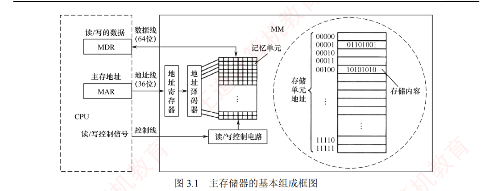
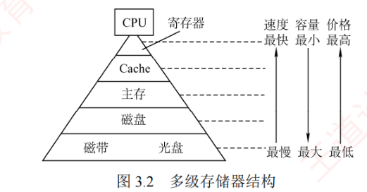
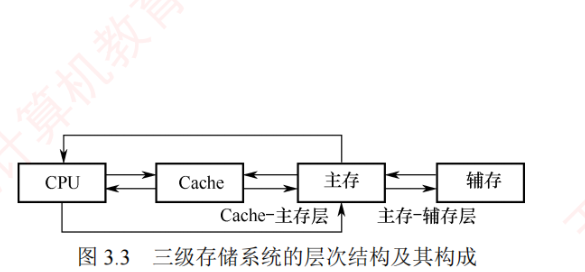
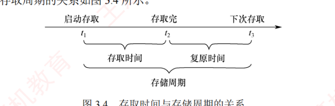

3.1 存储器概述
这一节先把存储器的「户口」理清楚：存储器有哪些类别（3.1.1）、主存由什么构成、CPU 怎么访存（3.1.2）、为什么要把存储器分成层层叠叠的塔（3.1.3）、用什么指标衡量一颗存储器的好坏（3.1.4）。对应考纲的「存储器的分类」与「层次化存储器的基本结构」两条，选择题常考分类判断、层次分工与 MAR/MDR 位数的计算。
3.1.1存储器的分类
存储器种类繁多，可以从不同角度进行分类。无论哪种分类，前提都一样：存储元件必须具有两个可区分的稳定物理状态，以分别表示二进制数 0 和 1。
1. 按存储元件分类
常用的存储元件有半导体器件、磁性材料和光介质三类：
- 半导体存储器（如 DRAM、SRAM）：半导体器件利用电荷或电压来存储信息；
- 磁表面存储器（如硬盘、磁带）：磁性材料通过磁化方向表示数据；
- 光存储器（如光盘）：光介质依靠反射率或透射率来记录信息。
2. 按存取方式分类
- 随机存取存储器（RAM）：可对任意存取单元进行读/写，且存取时间与物理位置无关。其特点是读/写灵活、使用方便，半导体存储器均属此类，常用于主存或高速缓存。
- 串行存取存储器：需按物理顺序检索来定位数据，存取时间依赖于数据在存储介质中的位置，通常以记录块为单位编址。典型代表是磁带，具有容量大但速度慢的特点。
- 直接存取存储器：兼顾随机访问和串行访问的特点，可先直接定位到目标区域，再按顺序存取数据。典型代表是磁盘存储系统。
- 相联存储器：按内容而非地址进行存取，查找速度快且与存储位置无关，但成本高、容量小。主要用于快表（TLB）、路由表等小容量高速查找场景。
3. 按信息的可改变性分类
可分为可读写存储器和只读存储器（Read-Only Memory, ROM）。ROM 中的信息在正常工作时只能读取，通常不可修改，但某些类型（如 EPROM、Flash）支持特定条件下的重写。RAM 属于可读写存储器，与 ROM 一样，通常采用随机存取方式。
4. 按信息的可保存性分类
- 易失性存储器：断电后信息即丢失，如 RAM；
- 非易失性存储器：断电后信息仍能保持，如 ROM、Flash 存储器、磁盘和光盘等。
此外，若读取操作会破坏存储单元的原有信息，则称为破坏性读出，读出后需立即执行再生操作以恢复数据；若读取不改变内容、无须再生，则为非破坏性读出。
3.1.2主存储器的组成和基本操作
主存储器（Main Memory, MM）的基本组成如图 3.1 所示。其中，由大量用于存储二进制数 0 或 1 的记忆单元（也称存储元）构成的存储矩阵（也称存储体、存储阵列）是存储器的核心部件。每个记忆单元是一种具有两种稳定物理状态、能够表示 0 和 1 的器件。为访问存储体中的信息，必须对存储单元编号（编址）。编址单位是指具有相同地址的一组记忆单元，称为一个存储单元。现代计算机通常采用字节编址方式，即每个地址对应 1 字节（8 位）数据。

当 CPU 执行指令需访问主存时，首先将目标地址送入存储器地址寄存器（MAR），并通过地址线传至主存的地址寄存器，地址译码器据此选中对应的存储单元。同时，CPU 通过控制线发送读/写控制信号：若为写操作，CPU 将待写入的数据存入存储器数据寄存器（MDR），在控制电路作用下经数据线写入选中单元；若为读操作，主存选中单元的内容经数据线送至 MDR。
3.1.3存储器的层次化结构
为缓解存储系统在容量、速度与成本之间的矛盾，现代计算机普遍采用多级存储器结构。从上至下（寄存器 → Cache → 主存 → 磁盘/辅存 → 磁带、光盘），各层存储器的单位价格逐层降低，存取速度逐层变慢，容量逐层增大，CPU 的访问频率也随之降低。该层次结构主要体现在两个关键层级：Cache-主存层和主存-辅存层。其中，Cache 和主存可直接与 CPU 交换信息；辅存则通过主存间接与 CPU 通信；主存作为枢纽，能与 CPU、Cache 及辅存交换数据。


存储层次的核心思想是：上一层存储器作为下一层的高速缓存。当 CPU 访问数据时，按 Cache → 主存 → 辅存的顺序逐级查找；若所需数据不在上一层，则从下层逐级调入——先读入主存，再从主存加载至 Cache。从 CPU 视角看，Cache-主存层的速度接近 Cache，而容量和单位成本接近主存；主存-辅存层的速度接近主存，而容量和单位成本接近辅存。
两个层级的主要目标有所分工，且调度方式不同：
- Cache-主存层：用于解决 CPU 与主存速度不匹配的问题，数据调度由硬件自动完成，对系统和程序员均透明；
- 主存-辅存层：用于解决系统存储容量不足的问题，数据调度由硬件与操作系统协同完成，对应用程序员透明（对系统程序员不透明）。
随着主存-辅存层的不断发展，逐渐形成了虚拟存储系统。在该系统中，程序员使用的地址空间（虚拟地址空间）远大于实际主存容量，程序可按更大的相对地址空间进行编写（详见 3.6 节）。
3.1.4存储器的主要性能指标
1. 存取时间
完成一次读/写操作所需的时间。其中读出时间是指从主存接收到有效地址到数据有效输出的时间；写入时间是指从主存接收到有效地址到数据成功写入指定单元的时间。
2. 存取周期
存储器进行连续两次独立的读/写操作所需的最小时间间隔。存取时间不等于存取周期——通常存取周期大于存取时间，因为每次读写操作完成后，存储器需要一段时间恢复内部状态。对于破坏性读出的存储器（如 DRAM），读出后必须立即再生数据，因此其存取周期往往显著大于存取时间，甚至可达 \(T_m = 2T_s\)（其中 \(T_m\) 为存取周期，\(T_s\) 为存取时间）。

3. 存储器带宽
存储器每秒能够传输的最大数据量。例如，若存储周期为 50ns，每个周期可传输 64 位数据，则理论带宽为 \(64\text{bit}/50\text{ns} = 1.28\,\text{Gb/s}\)。在实际系统中，存储器常组织为多模块结构，允许多个模块并行工作，从而将带宽提升至单模块带宽的若干倍（见 3.2.3 节）。